|
马王堆汉墓帛书
|
长沙马王堆汉墓
|
|
墓主
|
①轪侯夫人(辛追)
（卒于BC165） |
②轪侯(利苍)
（卒于BC185） |
③轪侯儿子(利豨)
（卒于BC168） |
|
编号
|
一号墓
|
二号墓
|
三号墓
|
|
发掘时间
|
1972年
|
1973年
|
1973年
|
保存异常完整的一号墓和三号墓
一号墓
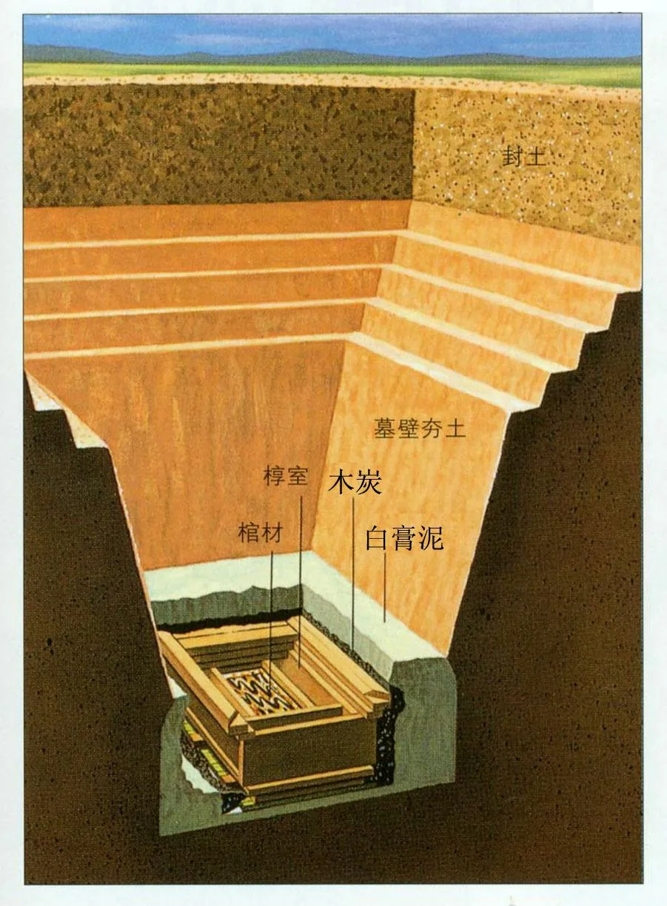
黑地彩绘棺
（长2.56米，宽1.14米）
（绘有复杂多变的云气纹和多种神怪和禽兽）
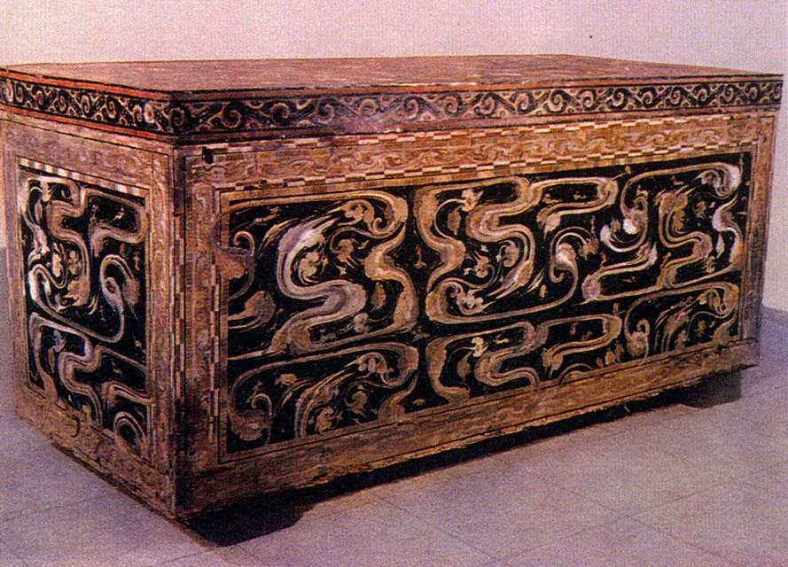
盖在最里面内棺上的“非衣”
（T形丝织彩绘灵旗）
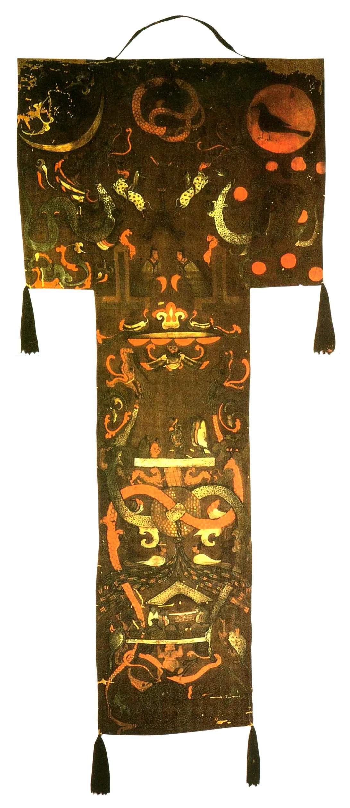
20层丝绸包裹着轪侯夫人 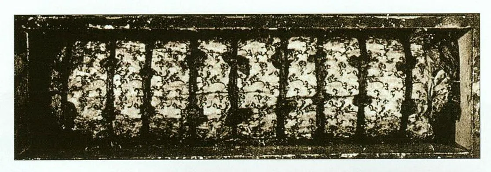
包裹夫人尸体的“乘云绣黄绮”
（ 裹尸锦衾的残片。在绮地上用朱红、浅棕红和橄榄绿三色丝线，以锁锈针法绣称叶瓣、眼状桃花纹和云纹。）
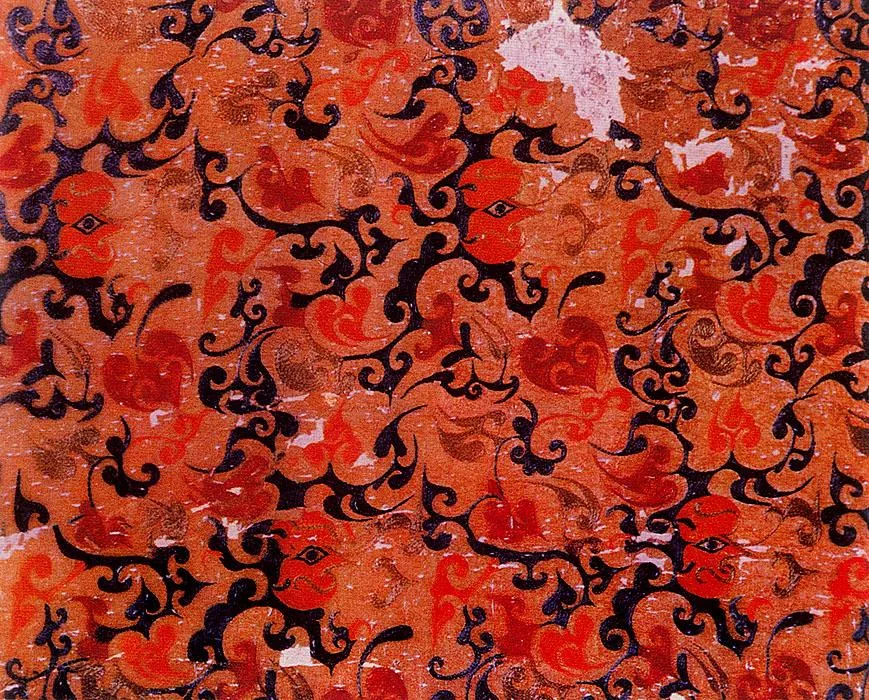
一天轪侯夫人吃香瓜时……
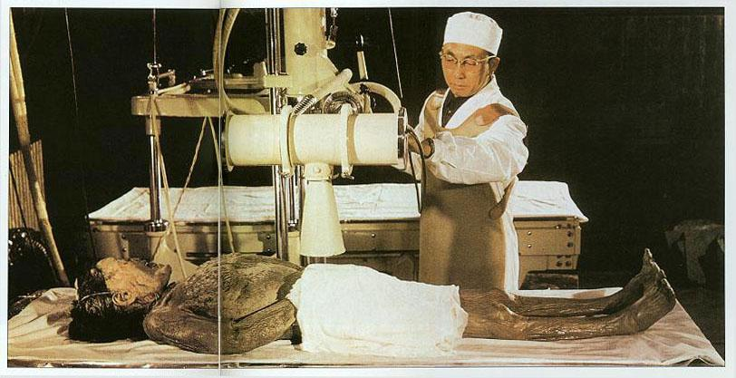
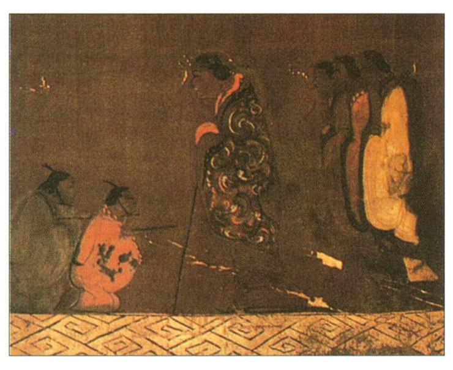
记录物品清单的竹简：遣策
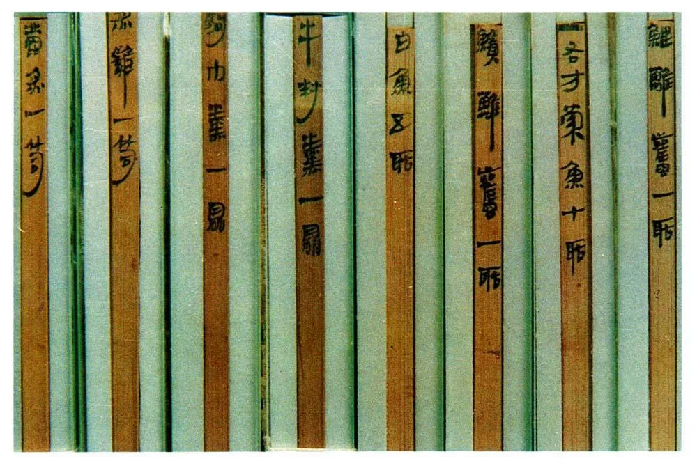
汉朝贵族夫人最奢侈讲究的内衣：“素纱衣”
（薄如蝉翼，仅重48克）
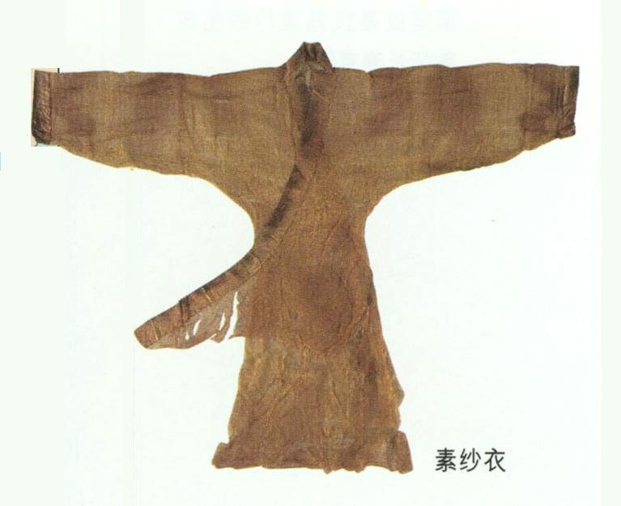
成套的服装：上衣、绢裙和手套
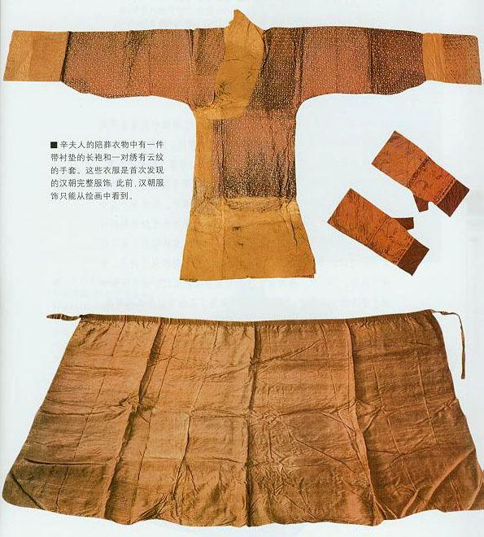
轪侯夫人的饮食：极为精致
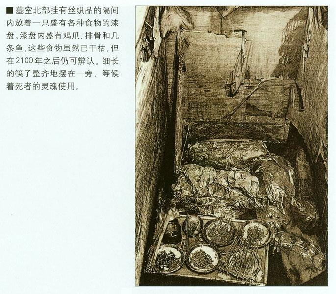
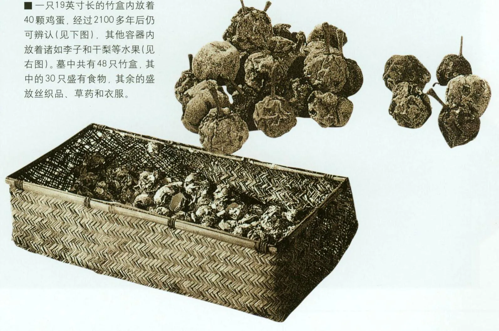
豪华精美的餐具
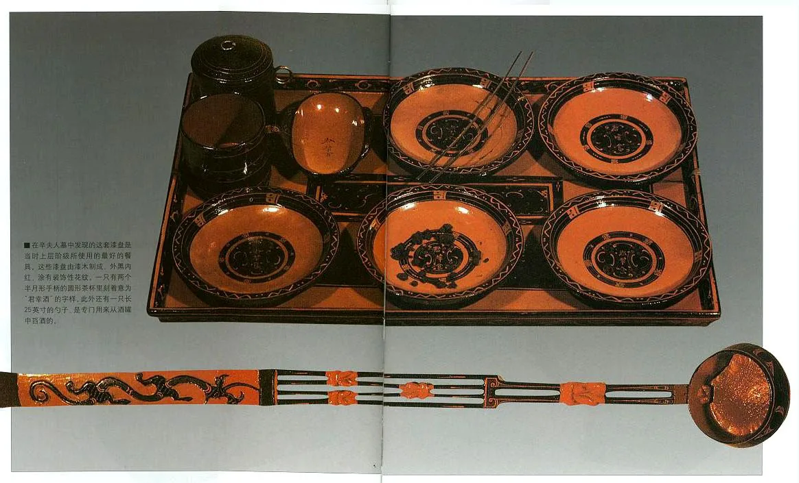
云纹漆匜
（外底部朱书“轪侯家”）
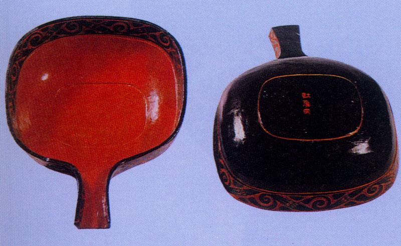
云纹漆鼎
（其中一个盛有藕片汤）
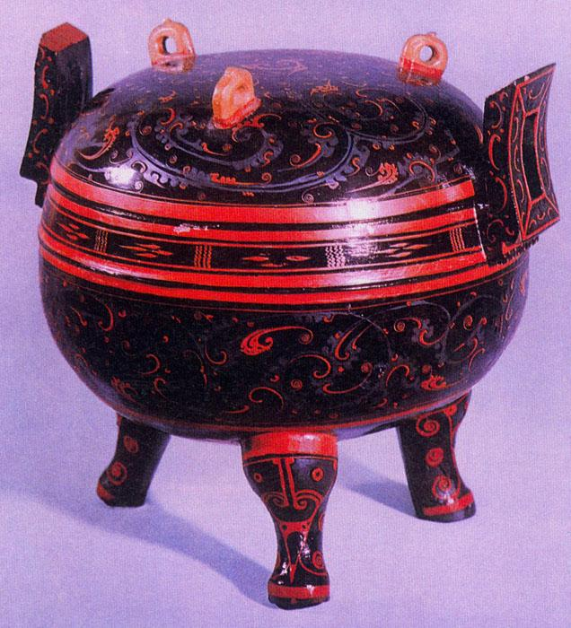
夫人的木雕管弦乐队
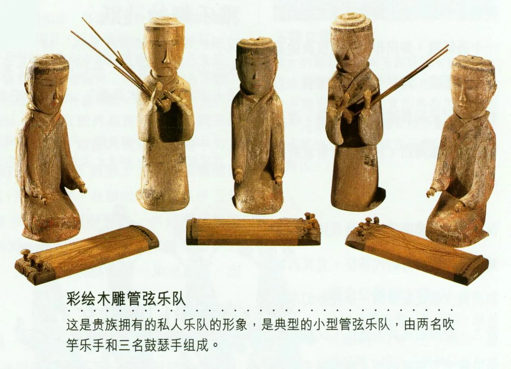
三号墓
(帛书和医简)
马王堆出土的《导引图》
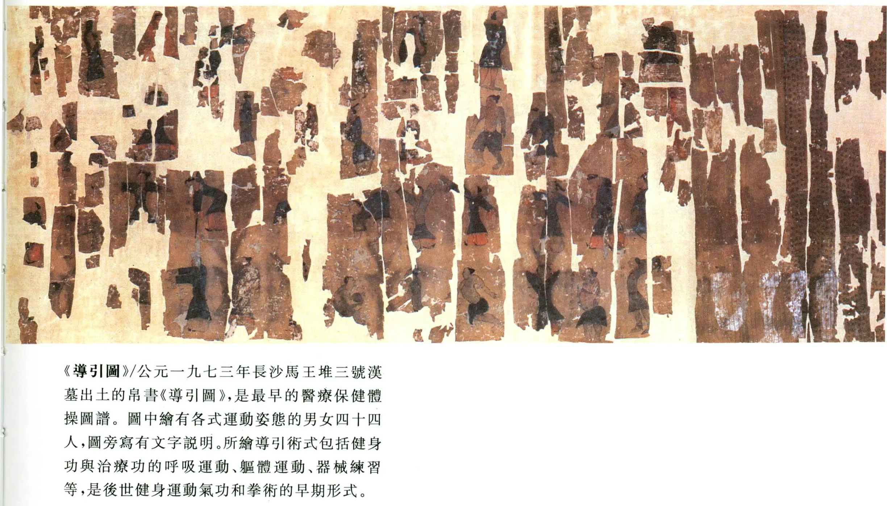
马王堆三号墓出土的的帛书《老子》
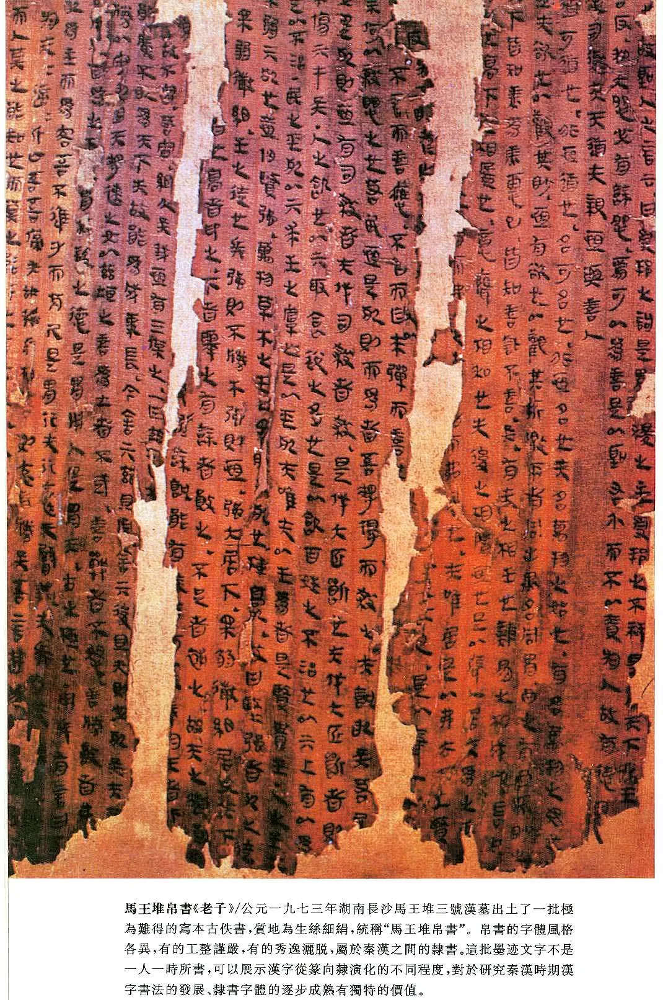
汉代帛书彗星图
（1973年马王堆三号墓出土）
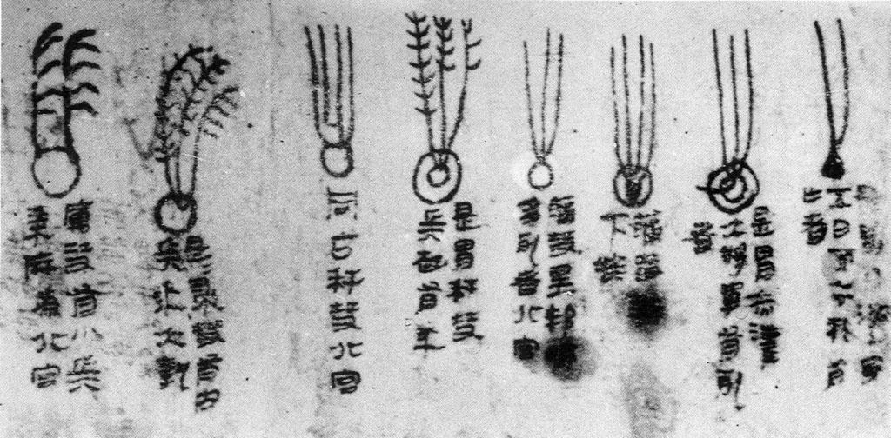
马王堆三号墓出土帛书
(出土约28种帛书，12余万字。)
|
名称
|
说明
|
| 《周易六十四卦》 |
隶书，93行，4900字。后附有佚书〈要〉〈缪和〉〈昭力〉。 |
| 《周易·系辞》 |
隶书，章节次序和文句与今本有不同 |
| 《春秋事语》 |
隶书，存16章97行，2000余字 |
| 《丧服图》 |
|
| 《战国纵横家书》 |
书体在篆隶之间，存27章，325行，11000余字。 |
| 《老子》甲本 |
书体在篆隶之间，卷后有佚书4篇：《五行》《九主》《明君》《德圣》 |
| 《黄帝书》4篇 |
隶书 |
| 《老子》乙本 |
隶书，卷前有佚书4篇：《经法》《十六经》《称》《道原》 |
| 《刑德》甲、乙、丙种 |
书体在篆隶之间 |
| 《式法》 |
|
| 《五星占》 |
隶书，存144行，约8000字。 |
| 《天文气象杂占》 |
书体在篆隶之间 |
| 《相马经》 |
隶书，存77行，约5200字 |
| 《出行占》 |
|
| 《木人占》 |
|
| 《筑城图》 |
|
| 《园寝图》 |
|
| 《五十二病方》 |
房中药方。卷前佚书4篇：《足臂十一脉灸经》《阴阳十一脉灸经甲本》《脉法》《阴阳脉死候》 |
| 《却谷食气》 |
|
| 《导引图》 |
卷前佚书2篇：①《阴阳十一脉灸经乙本》②《养生方》《杂疗方》《胎产书》 |
| 2幅地图 |
①《长沙国南部地形图》②《驻军图》 |
医简
马王堆汉墓出土竹简《养生方》
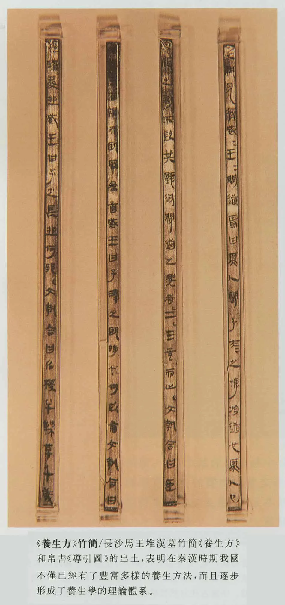
|
名称
|
说明
|
| 《十问》 |
食阴、进补、交接之道、养生 |
| 《合阴阳》 |
交接之道（“十动”“十节”“十修”：动作、姿势） |
| 《杂禁方》 |
方术 |
| 《天下至道谈》 |
交接的利弊（“八益”“七损”“十修”“八动”） |
|